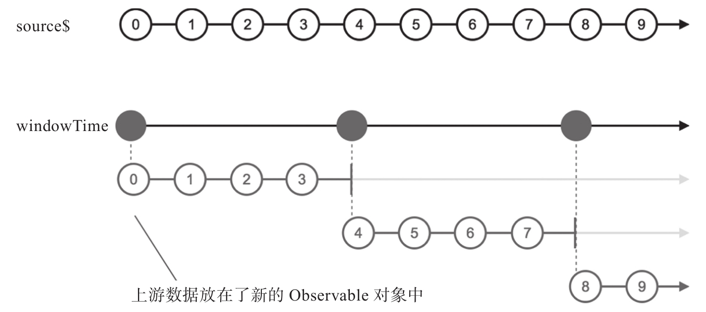
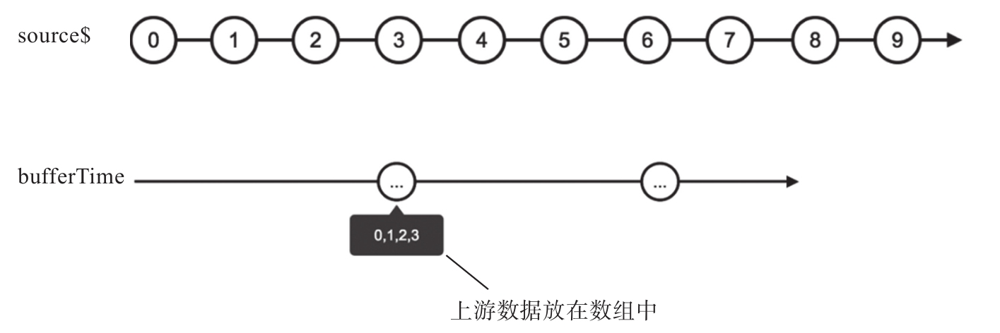
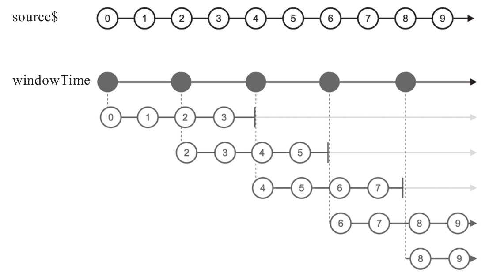
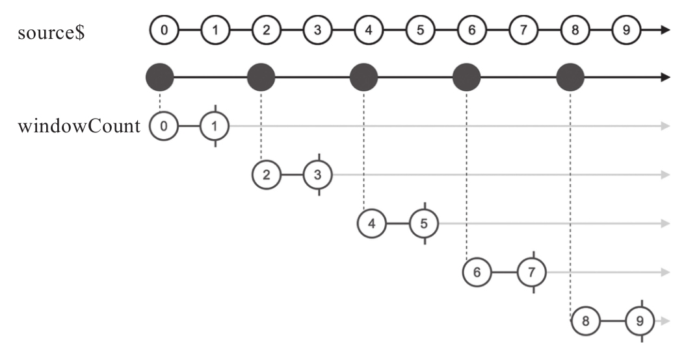

windowTime和bufferTime根据时间来缓存上游的数据，基本用法就是用一个参数来指定产生缓冲窗口的间隔，示例代码如下：
import {Observable} from 'rxjs/Observable';
import 'rxjs/add/observable/timer';
import 'rxjs/add/operator/windowTime';
const source$ = Observable.timer(0, 100);
const result$ = source$.windowTime(400);
其中，windowTime的参数是400，也就会把时间划分为连续的400毫秒长度区块，在每个时间区块中，上游传下来的数据不会直接送给下游，而是在该时间区块的开始就新创建一个Observable对象推送给下游，然后在这个时间区块内上游产生的数据放到这个新创建的Observable对象中。
windowTime产生结果用简单的输出无法清晰展示，需要用弹珠图才能看出发生了什么样的转化，如图8-2所示。
从弹珠图中可以看到，windowTime产生的Observable对象中每个数据依然是Observable对象，也就是一个高阶Observable对象。在每个400毫秒的时间区间内，上游的每个数据都被传送给对应时间区间的内部Observable对象中，当400毫秒时间一到，这个区间的内部Observable对象就会完结。
如果使用bufferTime，代码会是这样：
const result$ = source$.bufferTime(400);

图8-2 windowTime的弹珠图
产生的结果result$会不大一样，弹珠图如图8-3所示。

图8-3 bufferTime的弹珠图
bufferTime产生的是普通的Observable对象，其中的数据是数组形式，bufferTime会把时间区块内的数据缓存，在时间区块结束的时候把所有缓存的数据放在一个数组里传给下游。很明显，windowTime把上游数据传递出去是不需要延迟的，而bufferTime则需要缓存上游的数据，这也就是其名字中带buffer（缓存）的原因。
windowTime和bufferTime还支持可选的第二个参数，如果使用第二个参数，等于指定每个时间区块开始的时间间隔，修改上面的代码如下：
const result$ = source$.windowTime(400, 200);
产生的弹珠图如图8-4所示。

图8-4 使用第二个参数的windowTime弹珠图
从弹珠图可以看出，windowTime使用第二个参数200之后，产生内部Observable的频率更高了，每200毫秒就会产生一个内部Observable对象，而且各内部Observable对象中的数据会产生重复，比如数据2和3就同时出现在第一个和第二个内部Observable对象中。
对于windowTime和bufferTime，如果第一个参数比第二个参数大，那么就有可能出现数据重复，如果第一个参数比第二个参数小，那么就有可能出现上游数据的丢失。之所以说“有可能”，是因为丢失或者重叠的时间区块中可能上游没有产生数据，所以也就不会引起上游数据的丢失和重复。从这个意义上说来，windowTime和bufferTime如果用上了第二个参数，也未必是“无损”的回压控制。
很显然，如果不使用第二个参数，效果相当于第一个参数和第二个参数使用相同的值，比如只用一个参数400，效果等同于这样：
const result$ = source$.windowTime(400, 400);
对于bufferTime，因为需要缓存上游数据，不管参数设定的数据区间有多短，都无法预期在这段时间内上游会产生多少数据，如果上游在短时间内爆发出很多数据，那就会给bufferTime很大的内存压力，为了防止出现这种情况，bufferTime还支持第三个可选参数，用于指定每个时间区间内缓存的最多数据个数。
对于windowTime，因为它其实并不缓存数据，所以并不会有bufferTime一样的内存压力问题，但是RxJS为了让这两个操作符对应上，让windowTime也支持同样功能的第三个可选参数，示例代码如下：
const result$ = source$.windowTime(400, 200, 2);
产生的弹珠图如图8-5所示。

图8-5 使用第三个参数的windowTime弹珠图
在windowTime具有两个参数分别为400和200的情况下，产生高阶Observable对象的每个内部Observable本来应该有4个数据，但是因为第三个参数限定最多数据为2，所以实际上每个内部Observable对象的数据个数减少为2。只要一个时间区间内消费的上游数据个数达到第三个参数设的上限，对应的内部Observable对象立刻完结。
bufferTime是一样的功能，只是产生的结果是2个元素组成的数组而已。